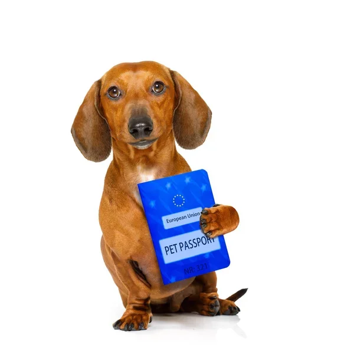
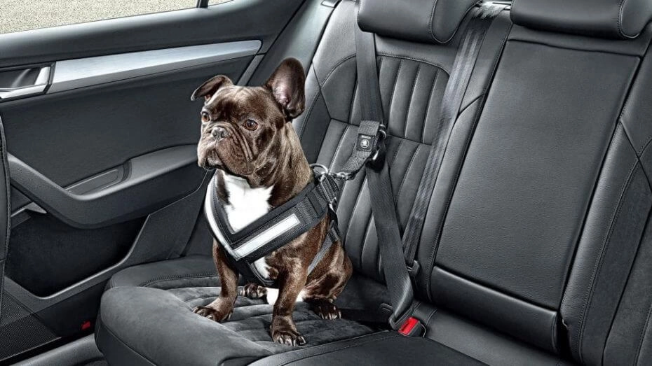
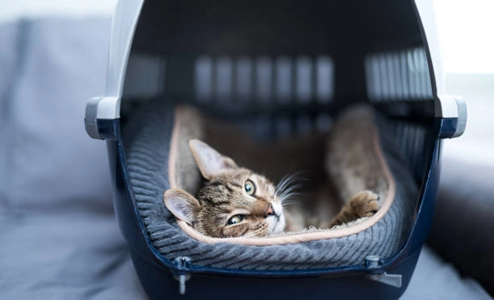
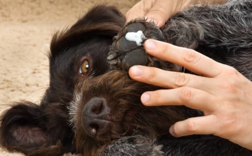

Antes de viajar con tu mascota, has de asegurarte de que está todo en regla. Esto va desde su documentación, asegurandonos de que está todo correcto y al dia, hasta sus vacunas, ¡no olvides que ellos también enferman! Si tu hijo canino es muy nervioso, acude al veterinario antes de un largo viaje. Estos pueden estresarlos y afectar a su salud, y es mejor preguntar por soluciones y alternativas antes de saltar a la piscina.
Si el viaje se realizará en coche, no olvides revisar la normativa de carrereteras. Tu mascota debe viajar en unas condiciones que sean seguras, tanto para ellos, como para ti. No olvides hacer las paradas necesarias, los viajes siempre son estresantes para todos, y nunca viene mal un descanso para beber un poquito y estirar las piernas (y patas). Nosotros tenemos nuestras necesidades, pero ellos también.
Deja que tu perro huela y se familiarice con la zona de residencia. Necesita conocer los nuevos olores para poder disfrutar de las vacaciones tanto como tu. Si viajas con tu gato, debes elegir una zona en la que dejar su transportin y sus enseres. Este sera su refugio, y probablemente donde pase mas tiempo los primeros dias. Ellos también tienen que asentarse y descansar del largo viaje.
Aunque tomemos todas las precauciones, siempre hay situaciones que nos superan, distracciones demasiado llamativas, y cosas mas interesantes que perseguir. Lleva siempre asegurada a tu mascota, con su microchip y la tarjeta que lo acredite. Esto puede marcar la diferencia entre una anecdota y una tragedia.
Nuestras mascotas, a diferencia de nosotros no usan zapatos. Por ello, cambios muy drasticos de temperatura pueden ser muy dañinos para sus patitas. Carga siempre cerca una pomada termo-resistente, y todos lo agradecereis.
